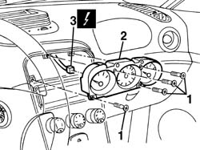
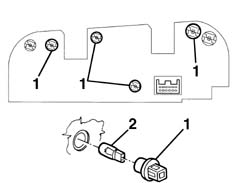
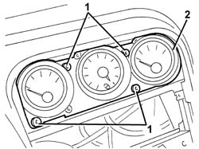
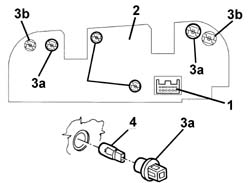

5560C51 combined analogue control panel - r+r or replace
- Path
- Procedures > 55 ELECTRICAL EQUIPMENT > 5560 INSTRUMENT PANEL > 5560C other instruments > 5560C51 combined analogue control panel - r+r or replace
- Kind
- repair procedure (removal / refitting; the operation number is the code)
- Applies to
- all engines; all production periods
- Interactive page
- https://sloeber94.github.io/elrnDB-a156/en/#/3238501
Applies to: all engines; all production periods
 Removing
Removing
 Refitting
Refitting5040D22 control (one) of air conditioner control support - arrange
2125C24 gear lever knob - r + r
7040A60 under facia trim - r+r
1. Unscrew the bolts
2. Move the analogue instrument panel.
3. Disconnect the electrical connection and keep the instrument.
 | Name | Connector |
|---|---|---|
3 | Auxiliary instrument |

Applies to: all engines; all production periods
1. If necessary, rotate the bulb holders for the light bulbs (1a), the engine coolant overheating warning light (1b) and the fuel reserve warning light (1c) and extract them.
2. Extract the bulb from the bulb holder.
Press fit.

Applies to: all engines; all production periods
Refitting
RemovingCheck that the instrument is not damaged.
If removed, fit the bulbs and the bulb holders.
Connect the electrical connection
Refit the analogue instrument panel fastening using the bolts.
Check the operation of the instrument and the functions controlled by it.
7040A60 under facia trim - r+r
2125C24 gear lever knob - r + r
5040D22 control (one) of air conditioner control support - arrange
Applies to: all engines; production: da 03/02 a 09/03, da 10/03
Removing
Refitting7040A65 passenger compartment box lock , one , r r
7040L37 gear lever plate - r r
5040D18 air conditioner control unit - r r
7040A25 central facia trim - r r
1. Undo the bolts securing the analogue instrument panel.
2. Partly extract the unit.

Applies to: all engines; production: da 03/02 a 09/03, da 10/03
1. Disconnect the electrical connections.
| Name | Connector |
|---|---|---|
1 | Auxiliary instrument |
2. Keep the combined analogue instrument panel.
3. If necessary, rotate the bulb holders with the light bulb (3a) and the bulb holders with the warning light (3b) and extract them.
4. Extract the bulb from the bulb holder.

Applies to: all engines; production: da 03/02 a 09/03, da 10/03
Refitting
RemovingCheck that the combined analogue instrument panel is not damaged.
If removed, fit the bulbs and the bulb holders.
Connect the electrical connection
Fit the combined analogue instrument panel in place.
Tighten the screws.
7040A25 central facia trim - r r
5040D18 air conditioner control unit - r r
7040L37 gear lever plate - r r
7040A65 passenger compartment box lock , one , r r
Test the device is working properly.
Topics linked from this page (12)
- 2125C24 gear lever knob - r + r
- 5040D18 air conditioner control unit - r r
- 5040D22 control (one) of air conditioner control support - arrange
- 5570T80 car radio unit - r+r
- 7040A25 central facia trim - r r
- 7040A60 under facia trim - r+r
- 7040A65 passenger compartment box lock , one , r r
- 7040L20 tunnel trim - r r
- 7040L37 gear lever plate - r r
- 7065C42 ashtray (one) r+r
- E20 Interior lighting
- E20 Auxiliary instrument
Topics that link to this page (28)
- K15 CLOCK NOT WORKING
- K20 FUEL LEVEL GAUGE NOT WORKING
- K21 FUEL RESERVE WARNING LIGHT NOT WORKING
- K25 ENGINE COOLANT TEMPERATURE GAUGE NOT WORKING
- K26 ENGINE COOLANT OVERHEATING WARNING LIGHT NOT WORKING
- K90 INSTRUMENT LIGHTS / NOT WORKING
- S61 DASHBOARD CREAKING
- 5010B24 under-facia air ducts r r
- 5010C24 upper air outlet on facia - r r
- 5020A10 heater box - r+r
- 5020B31 air distribution flap control cable(one) - r r
- 5020B42 air mixer flap control cable - r+r
- 5020L10 additional heater system boiler - r r
- 5040B30 expansion valve (tube orifice) - r+r
- 5040C10 air conditioner box - r+r
- 5040C50 air conditioner heater radiator - r+r
- 5040D52 air inlet and recirculation flap actuator - r r
- 5040D76 air contitioner distribution flap control motor - r r
- 5040D84 air conditioner left hand air mixer flap control motor - r r
- 5040D86 air conditioner right hand air mixer flap control motor - r r
- 5040D90 air conditioner system wiring bundle - r r
- 5505A26 bonnet wiring - r r
- 5505C31 under-facia wiring - r r
- 5505C41 cabin wiring - r r
- 5560C64 electronic unit(infocentre) - replace after checking operation with special equipment
- 5580E18 anti-theft device w/l - r+r following electrical wiring check
- 7040A10 instrument facia trim - r+r
- 7040A97 facia trim support beam - r r